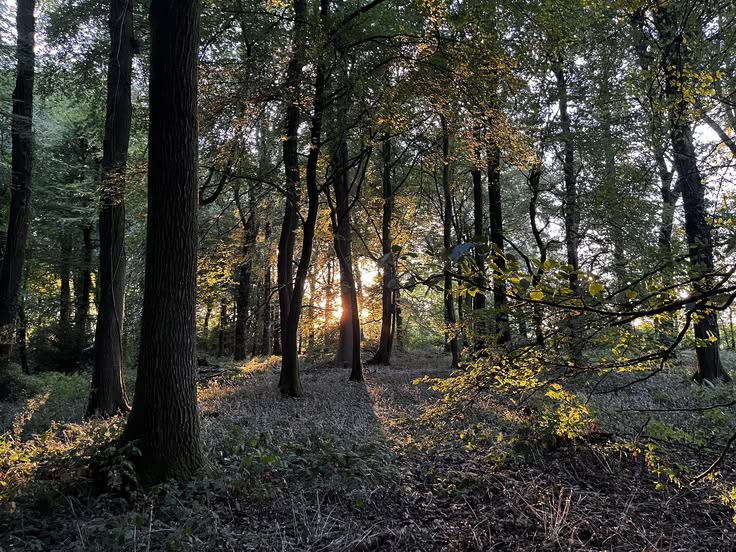
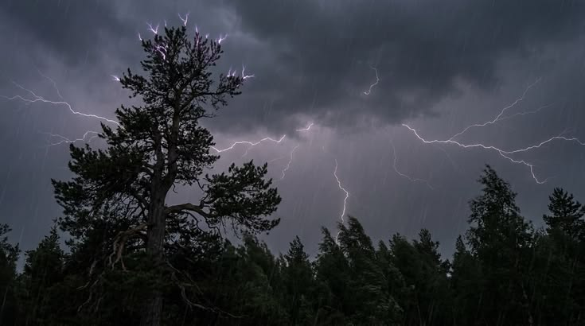

Cây cối có khả năng truyền tín hiệu cho nhau thông qua mạng lưới nấm dưới lòng đất. Các sợi nấm có thể kết nối hệ thống rễ của nhiều cây, giúp chúng trao đổi chất dinh dưỡng và truyền một số tín hiệu cảnh báo khi môi trường xung quanh có sự thay đổi. Hiện tượng này cho thấy hệ sinh thái rừng có sự tương tác phức tạp hơn chúng ta thường nghĩ.

Hình ảnh rừng rậm với hệ thống cây cối phong phú, minh họa cho sự kết nối và tương tác giữa các loài thực vật.
Sấm sét có thể góp phần bổ sung chất dinh dưỡng cho đất. Năng lượng từ tia sét giúp nitơ trong khí quyển biến đổi thành các hợp chất mà cây có thể hấp thụ sau khi chúng được đưa vào đất thông qua nước mưa. Vì vậy, sấm sét không chỉ là một hiện tượng thời tiết mà còn đóng một vai trò nhất định trong chu trình dinh dưỡng của tự nhiên.

Hình ảnh tia sét đánh xuống mặt đất, minh họa cho quá trình bổ sung chất dinh dưỡng vào đất thông qua hiện tượng tự nhiên này.